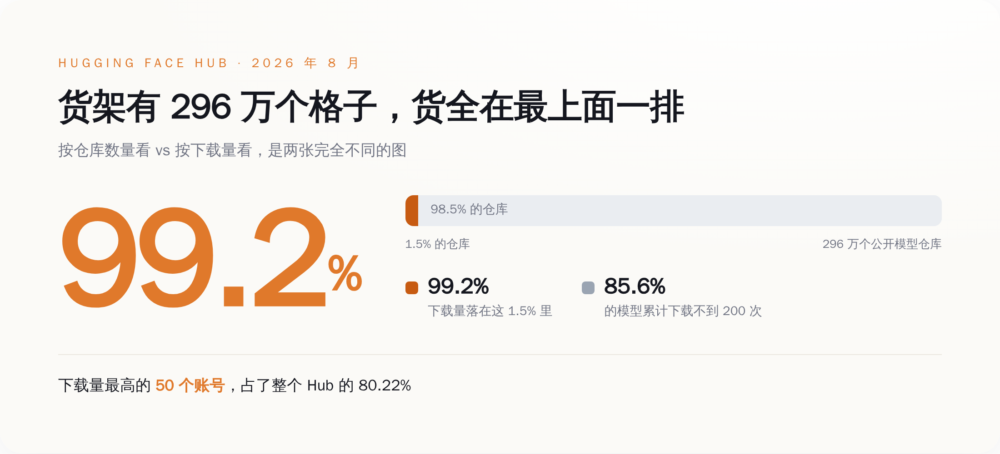
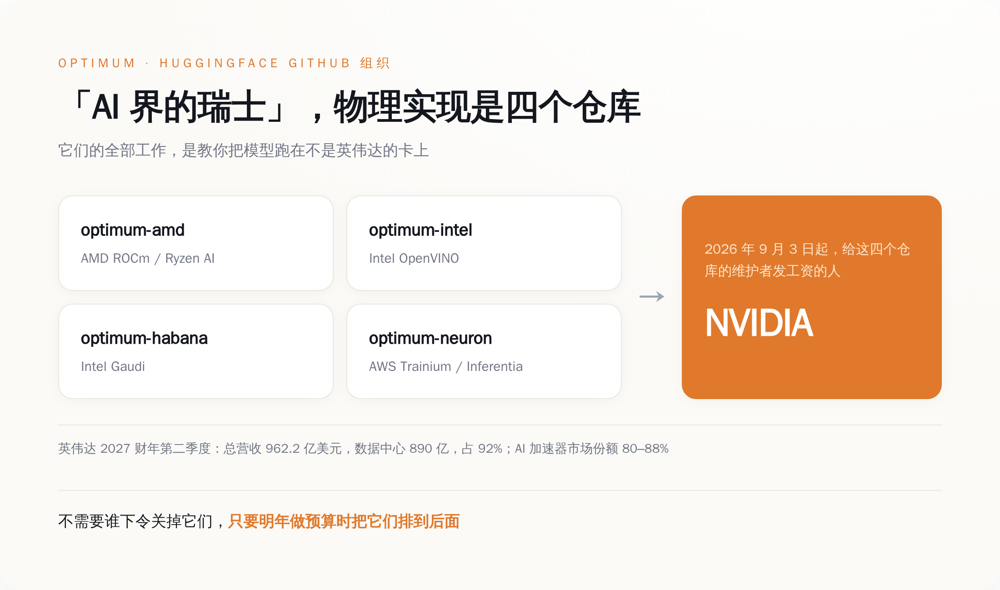

一、296 万个模型里，有 253 万个几乎没人下过
Hugging Face 的体量，官方口径听着很唬人：截至 2026 年 8 月，296 万个公开模型仓库，100 万个数据集，144 万个 Spaces，1000 万月活用户，每天 1500 万次下载。
然后你去看这堆数字的内部结构。85.6% 的模型，从上传那天到今天，累计下载量不到 200 次。1.5% 的仓库吃掉了全站 99.2% 的下载。下载量最高的 50 个账号，占了整个 Hub 的 80.22%。
所以「英伟达买下了 296 万个开源模型」这个说法，从第一个字开始就是错的。它买的是一个货架，货架上 253 万个格子基本是空的，真正有人伸手拿的东西，全挤在最上面那一排。
更麻烦的是，最上面那一排的东西，本来也不归 Hugging Face。
2026 年下载量排第一的模型家族是阿里的 Qwen，约 20.45 亿次，第二名谷歌约 4.18 亿次，第三名 Meta 约 2.27 亿次。Hub 上挂着 151448 个基于 Qwen 的衍生模型，是 Meta 全部模型加起来的 2.6 倍。Qwen 走的是 Apache 2.0，你今天可以把权重全量拖回本地，塞进硬盘，明天就算 huggingface.co 整个关站，这些文件也不会从你机器上消失。
一个货架，货物是别人的，还是免费的，随时可以搬走。129 亿买它，图什么？

二、买的是四个 GitHub 仓库
Hugging Face 这些年最爱说自己是「AI 界的瑞士」。这句话不是价值观宣言，它有具体的物理实现，就是 GitHub 上 huggingface 组织下的四个仓库：
optimum-amd，适配 AMD 的 ROCm 和 Ryzen AI。optimum-intel，适配英特尔的 OpenVINO。optimum-habana，适配英特尔的 Gaudi 加速卡。optimum-neuron，适配亚马逊自研的 Trainium 和 Inferentia。
这四个仓库干的是同一件事：一群拿 Hugging Face 工资的工程师，专职写代码教你怎么把模型跑在不是英伟达的卡上。AMD 的 Flash Attention v2 就是这么被合并进 Transformers 和 TGI 主干的——AMD 出人，Hugging Face 出位置，社区出测试。
对 AMD、英特尔、亚马逊来说，这四个仓库相当于一个不用自己发工资的外包工程部，还自带 1000 万月活的分发渠道。这是「中立」这个词在物理世界里唯一能被查证的样子：不是态度，是四个仓库的 commit 记录和给它们发工资的那张工资单。
从 9 月 3 日起，这张工资单的签字人换成了英伟达。
英伟达 2027 财年第二季度（截至 7 月 26 日）总营收 962.2 亿美元，其中数据中心 890 亿，占 92%。按不同机构口径，它在 AI 加速器市场的份额在 80% 到 88% 之间。也就是说，这四个仓库的新雇主，是这四个仓库唯一存在意义所要绕开的那家公司。
这里不需要什么阴谋。不会有谁开会说「把 optimum-amd 停了」，那样太蠢，也会被抓。真实世界的运作方式更无聊：明年做预算，AMD 新架构的适配排在第几优先级？申请两个 headcount 去修 ROCm 的兼容性 bug，谁批？CUDA 路径的新特性上线当天就有支持，ROCm 路径晚三个月，算不算问题？
没人下命令，预算会自己说话。
